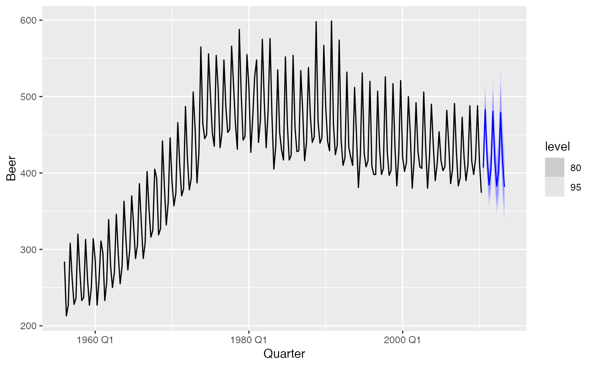

Produces a forecast plot from a fable. As the original data is not included
in the fable object, it will need to be specified via the data argument.
The data argument can be used to specify a shorter period of data, which is
useful to focus on the more recent observations.
# S3 method for fbl_ts autoplot(object, data = NULL, level = c(80, 95), show_gap = TRUE, ...) # S3 method for fbl_ts autolayer( object, data = NULL, level = c(80, 95), point_forecast = list(mean = mean), show_gap = TRUE, ... )
| object | A fable. |
|---|---|
| data | A tsibble with the same key structure as the fable. |
| level | The confidence level(s) for the plotted intervals. |
| show_gap | Setting this to |
| ... | Further arguments passed used to specify fixed aesthetics for the forecasts such as |
| point_forecast | The point forecast measure to be displayed in the plot. |
library(tsibbledata) if (requireNamespace("fable", quietly = TRUE)) { library(fable) fc <- aus_production %>% model(ets = ETS(log(Beer) ~ error("M") + trend("Ad") + season("A"))) %>% forecast(h = "3 years") fc %>% autoplot(aus_production) }#> Error in interaction(): No factors specifiedif (requireNamespace("fable", quietly = TRUE)) { aus_production %>% autoplot(Beer) + autolayer(fc) }